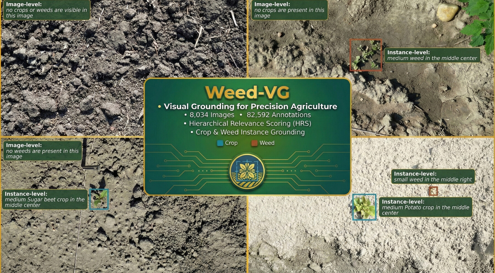
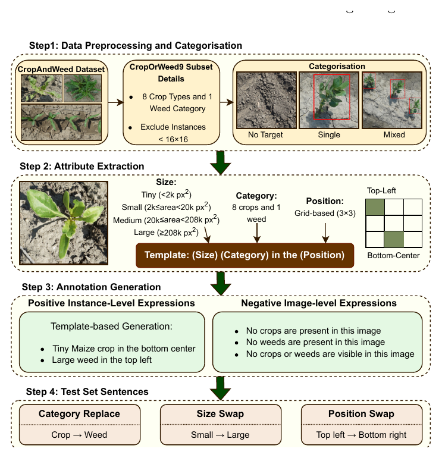
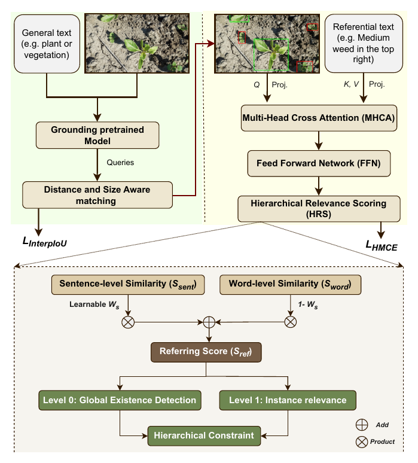

Understanding field imagery, such as detecting plants and distinguishing individual crop and weed instances, is a central challenge in precision agriculture. Despite progress in vision–language tasks like captioning and visual question answering, Visual Grounding (VG) — localising language-referred objects — remains unexplored in agriculture, largely because there is no suitable benchmark for field conditions, where many plants look highly similar, appear at multiple scales, and the referred target may be absent from the image.
To address this, we introduce gRef-CW, the first dataset designed for generalised visual grounding in agriculture, including negative (no-target) expressions. Benchmarking current state-of-the-art grounding models on gRef-CW reveals a substantial domain gap. Motivated by these findings, we introduce Weed-VG, a modular framework that incorporates multi-label hierarchical relevance scoring and interpolation-driven regression. Weed-VG advances instance-level visual grounding and provides a clear baseline for developing VG methods in precision agriculture.
gRef-CW is derived from the CropOrWeed9 subset of the CropAndWeed dataset and provides multi-level textual annotations, bounding boxes, and segmentation masks. It uniquely includes negative expressions at both the image and instance level, a long-tailed scale distribution (84.7% of instances are tiny or small), and dense scenes (30.7% of images contain more than 10 instances).
Drop an overview/demo video here. Self-host an MP4 at
docs/static/videos/overview.mp4 or embed a YouTube link.
See the HTML comment in this section for the exact snippet, or delete this
section if there is no video.


| Model | Top-1 | Top-5 | R@0.5 | mIoU | Neg-Acc |
|---|---|---|---|---|---|
| MDETR | 10.16 | 12.97 | 7.78 | 54.19 | 3.32 |
| GroundingDINO-T | 11.92 | 31.99 | 20.34 | 17.44 | 2.88 |
| GroundingDINO-L | 20.38 | 43.49 | 28.73 | 23.68 | 7.52 |
| SAM3 | 34.88 | 66.80 | 46.65 | 32.76 | 25.53 |
| Weed-VG (Ours) | 62.42 | 82.45 | 55.44 | 57.25 | 78.35 |
Add the qualitative results figure (paper Fig. 5, page 13). Save it as
docs/static/images/qualitative.png and uncomment the snippet in the
HTML comment above. Delete this section if not needed.
@inproceedings{haghighat2026multi,
title = {Multi-label Instance-level Generalised Visual Grounding in Agriculture},
author = {Haghighat, Mohammadreza and Saleh, Alzayat and Rahimi Azghadi, Mostafa},
booktitle = {European Conference on Computer Vision (ECCV)},
year = {2026}
}
@dataset{haghighat2026grefcw,
title = {gRef-CW: Generalised Referring Expressions for Crops and Weeds},
author = {Haghighat, Mohammadreza and Saleh, Alzayat and Rahimi Azghadi, Mostafa},
year = {2026},
publisher = {Hugging Face},
doi = {10.57967/hf/9244},
url = {https://huggingface.co/datasets/Mhaghighat98/gRef-CW}
}
Please also cite the source dataset, CropAndWeed (Steininger et al., WACV 2023), whose images gRef-CW builds upon.